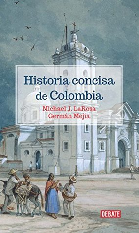

Historia concisa de Colombia
Reseña por Jorge I. Zuluaga

Ver reseña en GoodReads (necesita cuenta)
Después de haber vivido un exitoso proceso de paz con la guerrilla más beligerante de la historia del país, las FARC-EP, tras el cual vivimos unos años de esperanza en los que creíamos que algo cambiaría en el país, un grupo de políticos populistas de ultraderecha, con la ayuda siempre dispuesta de bandas criminales y grupos guerrilleros que huelen a alcanfor, están devolviendo al país a los conflictos de hace dos décadas.
Es justo en este momento en el que todos los que vivimos en Colombia (y también los que no, y que están sorprendidos por el curso que están tomando los hechos) debemos conocer mejor su historia.
Fue esta la razón que me motivó a leer el libro de Michael LaRosa y Germán Mejía.
Debo confesarles que, tal vez por mi propia experiencia educativa (soy de la generación de colombianos que "sufrió" las cátedras de historia y geografía en la educación básica... mejores las segundas que las primeras), incluso hasta hace muy poco, pensar en la historia de Colombia, especialmente de esa Colombia olvidada de los años 1800 de la que un ciudadano a duras penas recuerda a Bolívar, para mí resultaba bastante aburrido (repito, me recordaba las cátedras memorísticas y poco didácticas que recibí en mi infancia y adolescencia).
Pero ahora, un "poco más maduro", me dije a mí mismo que había llegado la hora de conocer la historia de mi país para entender por qué no era capaz de encontrar la paz (ni de construir buena infraestructura, ni de acabar con la corrupción, ni de separar —realmente— la Iglesia del Estado, ni de financiar la ciencia, etc.). Pero no podía dar este paso de forma muy repentina. Tenía que comenzar con un libro breve y práctico que me diera una visión panorámica.
El título de este libro, "Historia concisa de Colombia", me convenció (aunque debo reconocer que fue una razón superficial) de que era el texto con el que debía comenzar.
Ahora, después de leerlo, me doy cuenta de que el trabajo de LaRosa y Mejía iba más allá de compactar doscientos y cacho años de historia en unas 350 páginas.
Como ellos mismos lo declaran desde el principio, este libro presenta una historia de "Colombia" (el Virreinato de la Nueva Granada, la Gran Colombia, la República Federal de la Nueva Granada, Estados Unidos de Colombia o la República de Colombia; no sé si hay un país que haya tenido más nombres) diferente, que escapa de los esquemas convencionales de la historiografía académica que se centran, normalmente, en desarrollos cronológicos o en la vida y el papel de personajes que van apareciendo también en un orden temporal predecible.
Esta es una historia contada en desorden (hasta el último capítulo te están hablando de la República de 1850 y desde el tercero ya oyes mencionar a Álvaro Uribe y a las FARC); contada de una manera que te permite entender, en contexto, los grandes temas del país en estos doscientos años: la política, la cultura, las relaciones con el mundo, la vida cotidiana, el conflicto, la unidad económica, etc.
El libro está bien escrito y el tono de la lectura, aunque en ocasiones se siente muy académico, es agradable y entretenido.
El libro fue escrito para ser leído primero en los Estados Unidos, de modo que es interesante la manera como se introducen cada uno de los temas asumiendo que quien los lee no es un colombiano que "sufrió" (o gozó) buena parte de la historia que se está contando.
Después de leerlo, siento que tengo la visión panorámica que, lamentablemente, la educación no consiguió dejarme. Y no es que el sistema educativo no haya hecho un esfuerzo con nosotros, es que tal vez la historia es mejor conocerla cuando uno se siente preparado para ella o cuando la necesita para seguir viviendo en el complejo país del Sagrado Corazón.